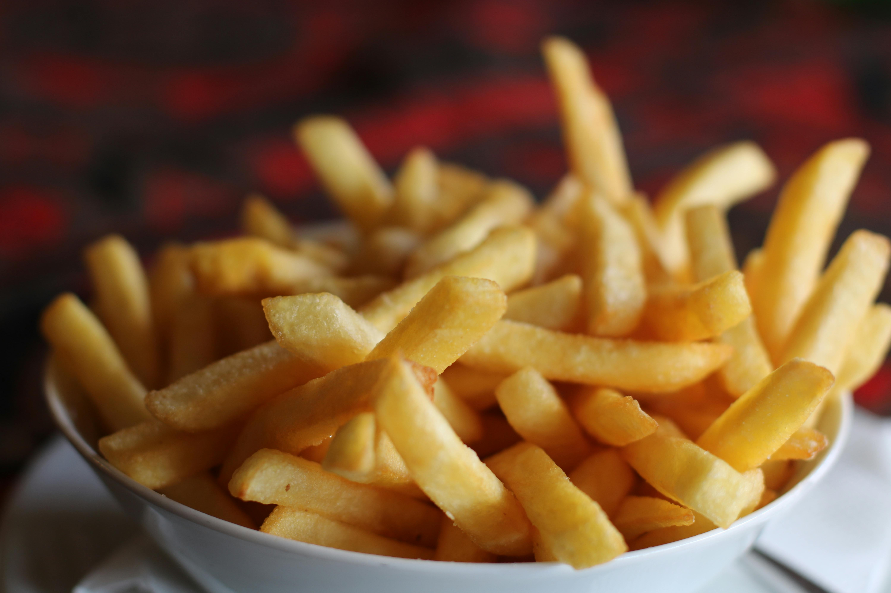

Chips

List of ingridients
- Cooking oil
- Potatoes
- 3 tomatoes
- 1 onion
- Salt
The steps to make Chips
- Peal the potatoes and cut them
- Put 1 litre of cooking oil in the frying pan and let it boil for a minute
- Deep the potatoes in the pan until they are a bit dry
- Cut onions and tomatoes
- Serve the chips with tomatoes,onions and salt